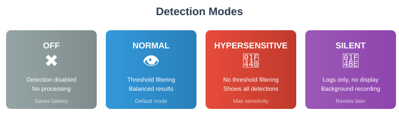

Detection System
⏱️ 60 minutesLearning Objectives
- Understand each detection mode and when to use it
- Know how the default AI detector processes video frames
- Understand what confidence scores represent and how thresholds work
- Know what thermal detection can and cannot do
- Distinguish between true detections and false positives
3.1 Detection Modes
Eagle Eyes has four detection modes that control how the AI processes the live video feed. The current mode is shown as an icon in the top status bar of the Fly Screen, and you can cycle through modes by tapping the detection mode icon.

| Icon | Mode | Threshold Applied |
|---|---|---|
| ✖ | OFF | N/A |
| 👁️ | NORMAL | Yes |
| 👀 | HYPERSENSITIVE | No |
| 💾 | SILENT | Yes |
✖ OFF Mode
When detection is set to OFF, no AI processing takes place. The drone's video feed streams to your screen as a raw video with no analysis. No frames are sent to the detection model, no bounding boxes are drawn, and no detections are logged.
Use OFF mode during transit flights when you are simply repositioning the drone and do not need detection. This saves battery on both the drone and your controller device, since AI inference is computationally expensive. It also reduces heat generation on the controller, which can be a factor during long operations in warm weather.
👁️ NORMAL Mode
Normal is the default and most commonly used detection mode. Every video frame from the drone is passed through the AI detection model. The model analyzes each frame and returns any detections it finds, each with a confidence score. In Normal mode, the app applies your confidence threshold (default 50%) as a filter — only detections that score at or above your threshold are shown on screen as bounding boxes.
This means the AI is still examining every frame, but it only alerts you to detections where it has reasonable confidence. Lower-scoring detections that the model is less sure about are quietly discarded. This gives you a balanced experience: you get alerted to likely targets without being overwhelmed by low-confidence noise. Normal mode is the right choice for the vast majority of SAR operations.
👀 HYPERSENSITIVE Mode
Hypersensitive mode runs the exact same AI model on every frame, but with one critical difference: the confidence threshold is completely ignored. Every single detection the model produces is displayed on screen, regardless of how low the score is. A detection at 5% confidence will be shown just the same as one at 95%.
This dramatically increases the number of bounding boxes you see. You will get far more false positives — rocks, tree stumps, shadows, and debris will frequently trigger detections. The tradeoff is that you are much less likely to miss a real target. If the model detected a person even at very low confidence, you will see it.
Use Hypersensitive mode when the stakes are highest and you cannot afford to miss anything: dense vegetation where targets may be partially obscured, low-light conditions where the model struggles, or areas where a target is known to be but Normal mode isn't finding them. Be prepared for significantly more operator workload in reviewing detections.
💾 SILENT Mode
Silent mode runs the AI detection model with the same threshold filtering as Normal mode, but detections are not displayed on screen. Instead, they are logged in the background for later review. The video feed appears clean with no bounding boxes drawn.
This mode is useful when you want to record detection data for post-flight analysis without the visual clutter on screen during the flight. The detections are still captured and saved, but the pilot's view remains unobstructed.
3.2 How the Detector Works
The Default Detector
Eagle Eyes ships with a default live detector called V2.5.Pilot.Legacy. This is a TensorFlow Lite neural network model that has been trained specifically for aerial SAR — it has learned to recognize people, tents, vehicles, and other objects of interest as seen from a drone's perspective at various altitudes.
Here is what happens every time a video frame arrives from the drone:
- Frame Capture — The app grabs the current frame from the drone's live video feed as a bitmap image.
- Preprocessing — The frame is resized and normalized to match the input dimensions the model expects.
- Inference — The preprocessed image is fed into the TensorFlow Lite model, which runs a forward pass through its neural network. This is the computationally expensive step that takes most of the processing time.
- Output Parsing — The model outputs a set of bounding boxes, each with coordinates (where in the frame the detection is) and a confidence score (how certain the model is that this detection is real). A cropped thumbnail of each detection is also extracted.
- Threshold Filtering — In Normal and Silent modes, any detection with a score below your confidence threshold is discarded. In Hypersensitive mode, all detections pass through.
- Display — Surviving detections are drawn as colored rectangles (bounding boxes) over the video feed, with their confidence score shown as a percentage. The detection is also logged and can be reviewed later.
This entire pipeline runs on every frame in real time. The model uses the .eaglelite format, which is an encrypted and compressed TensorFlow Lite model. Encryption ensures the trained model weights are protected, while compression keeps file sizes small (typically 2-6 MB for live detectors).
Other Available Detectors
In addition to the default live detector, Eagle Eyes supports multiple detector models that are optimized for different situations:
| Detector | Type | Optimized For |
|---|---|---|
| V2.5.Pilot.Legacy | Live | Real-time video analysis during flight (default) |
| V2.5.Pilot.Photo.4k | Photo | High-resolution still image analysis at 4K resolution |
The Photo 4K detector is the default for analyzing still photographs. It is a larger model (around 6 MB) designed to work with high-resolution images rather than video frames. Because it doesn't need to run in real time, it can be more thorough in its analysis. Use this when reviewing photos taken during or after a flight.
Additional detector models can be loaded into Eagle Eyes as they become available. The app automatically discovers any .eaglelite or .tflite model files and makes them selectable.
What the Model Detects
The detector models are trained on aerial imagery and optimized for SAR-relevant objects. They are best at detecting:
- People (standing, sitting, lying down, partially obscured)
- Brightly colored clothing and gear
- Tents and shelters
- Vehicles
- Objects that contrast with natural terrain
The models are not perfect. They work best at altitudes between 30-120m where people are large enough to be distinguishable but the field of view is wide enough to cover ground efficiently. At very high altitudes people become too small, and at very low altitudes the model may not recognize partial views.
Common False Positives
The AI will sometimes identify non-target objects as detections. Understanding common false positives helps you assess detections faster:
- Large rocks and boulders — Especially those with color contrast against surrounding terrain
- Tree stumps — Upright stumps can resemble a seated or standing person
- Wildlife — Deer, bears, and large animals trigger detections frequently
- Trash and debris — Colored litter, abandoned gear, or equipment
- Water reflections — Bright glare spots on water surfaces
- Shadows — Strong shadows can create shapes the model interprets as objects
3.3 Understanding Confidence Scores
Every detection the AI produces comes with a confidence score, displayed as a percentage on the bounding box (e.g., "78%"). Understanding what this number actually means is critical for making good decisions in the field.
What the Percentage Represents
The confidence score is the model's estimated probability that the detection is correct. When the model says "78%", it means that based on the patterns it learned during training, there is a 78% likelihood that what it found in that region of the frame is a real object of interest (typically a person).
More technically: the neural network's final output layer produces a raw activation value for each potential detection. This value is passed through a sigmoid function that maps it to a number between 0.0 and 1.0. The app displays this as a percentage — so 0.78 becomes "78%". A score of 1.0 (100%) would mean the model is completely certain, while 0.0 (0%) would mean no confidence at all.
It is important to understand what confidence does not mean:
- It is not a measure of how important the detection is
- It is not related to the size or distance of the object
- It is not a comparison between different detections — a 90% detection is not "more of a person" than a 60% detection
- It is simply the model's internal certainty that something is there at all
The Confidence Threshold
Eagle Eyes has a configurable confidence threshold that acts as a cutoff filter. The default threshold is 50%. In Normal and Silent modes, any detection scoring below this threshold is discarded before being shown to you.
This means with the default threshold:
- A detection at 51% → Shown on screen
- A detection at 49% → Discarded, you never see it
- A detection at 95% → Shown on screen
You can adjust the threshold in the app settings. Lowering it (e.g., to 30%) means more detections get through, including weaker ones. Raising it (e.g., to 70%) means only high-confidence detections are shown, reducing noise but increasing the risk of missing real targets.
In Hypersensitive mode, the threshold is completely bypassed — every detection is shown regardless of its score.
Interpreting Scores in the Field
| Score Range | What It Means | Recommended Action |
|---|---|---|
| 90-100% | The model is highly certain this is a real detection. The object closely matches training examples. | Investigate immediately. Very likely a real target. |
| 70-89% | Strong detection. The model found clear patterns consistent with a target, but some ambiguity remains. | Strong candidate. Prioritize investigation. |
| 50-69% | Moderate confidence. The model sees something that partially matches, but there is significant uncertainty. Could be a partially obscured target or a convincing false positive. | Worth investigating when possible. Check the cropped thumbnail for more detail. |
| 30-49% | Low confidence. Only visible in Hypersensitive mode or with a lowered threshold. The model is mostly uncertain. | Quick visual check if time permits. Often false positives. |
| Below 30% | Very low confidence. The model barely detected anything. Only visible in Hypersensitive mode. | Usually noise. Only investigate in high-priority search areas. |
Why Scores Vary
The same real target can produce different confidence scores depending on conditions:
- Altitude — The model performs best at its trained altitude range. Too high and targets are tiny; too low and they fill the frame abnormally.
- Angle — A straight-down view produces different scores than an angled view of the same target.
- Lighting — Harsh shadows, backlighting, or low light all reduce confidence.
- Occlusion — A person partially hidden behind a tree or under a tarp will score lower than someone in the open.
- Contrast — Bright clothing against green forest scores higher than camouflage patterns.
- Motion blur — Fast drone movement can blur frames and reduce detection quality.
3.4 Thermal Detection
Some DJI drones are equipped with a dedicated thermal infrared camera in addition to their standard RGB camera. Eagle Eyes supports thermal camera feeds and provides a specialized thermal overlay system for SAR operations.
Supported Thermal Drones
Thermal detection is available on DJI drones with built-in thermal cameras:
- Matrice 3T (M3T)
- Matrice 30T (M30T)
- Matrice 4T (M4T)
- H30T
These drones have a dedicated thermal sensor alongside their RGB camera. The thermal sensor captures infrared radiation (heat) rather than visible light, producing a grayscale or false-color image where pixel brightness corresponds to temperature.
How Thermal Overlay Works
When viewing the thermal camera feed, Eagle Eyes reads temperature data from the drone's thermal sensor at a native resolution of 640 × 512 pixels. The app identifies the hottest and coldest points in the frame and displays them as overlay markers:
- Red circle — Marks the hottest point in the frame, with the temperature displayed in your chosen units (°C or °F)
- Blue circle — Marks the coldest point in the frame, with the temperature displayed
You can configure which markers are shown through the thermal overlay display modes:
| Display Mode | Shows | When to Use |
|---|---|---|
| Hot and Cold | Both the hottest (red) and coldest (blue) markers | General thermal scanning — gives full temperature awareness |
| Hot Only | Only the hottest point marker | Searching for warm targets (people, animals, vehicles) against cool backgrounds |
| Cold Only | Only the coldest point marker | Specialized use — finding cold anomalies |
| Hot Above Threshold | Hottest point, but only when it exceeds a temperature threshold you set (default 25°C) | Filtering out low-temperature hot spots that aren't interesting — only alerts you when something genuinely warm appears |
| None | No markers | When you want the raw thermal image without overlay markers |
Important: No AI Detection on Thermal
This is an important distinction. The AI models (V2.5.Pilot.Legacy, etc.) were trained on RGB (visible light) imagery. Thermal images look fundamentally different — they show heat signatures rather than colors and textures — so the RGB-trained models would not produce useful results on thermal frames. When the app detects that the active camera feed is thermal, it automatically skips AI inference for those frames.
This means your thermal detection workflow relies on:
- The hot/cold marker overlay to identify temperature anomalies
- Your own visual scanning of the thermal image for human-shaped heat signatures
- Switching between thermal and RGB feeds to cross-reference — if you spot a heat anomaly on thermal, switch to RGB and let the AI analyze the same area
Thermal Limitations and Accuracy
Thermal imaging is a powerful tool for SAR, but it has significant limitations you must understand:
- Resolution — The thermal sensor is 640×512 pixels, far lower than the RGB camera. At high altitudes, a person may be only a few pixels on the thermal image, making them difficult to distinguish from other warm objects.
- Environmental Interference — Sun-heated rocks, asphalt, metal surfaces, and even patches of dark soil can appear as hot spots. During the day, the ground absorbs solar heat and can mask human body heat. Thermal works best at dawn, dusk, and at night when the ground has cooled and warm bodies stand out clearly.
- Insulation — A person under a thermal blanket, inside a sleeping bag, or beneath dense tree canopy may not show a detectable heat signature. The thermal camera only sees surface temperatures.
- Distance — At high altitudes (120m+), a person's heat signature becomes a single warm pixel that blends with environmental noise. Effective thermal search altitudes are generally lower than RGB — typically 30-80m depending on conditions.
- Weather — Rain reduces thermal contrast significantly. Fog and heavy moisture in the air absorb infrared radiation. Wind cools exposed surfaces, reducing the temperature difference between a person and their surroundings.
- Ambient Temperature — When air temperature is close to body temperature (above ~30°C / 86°F), the contrast between a person and the environment decreases dramatically, making thermal detection much harder.
- Animal False Positives — Thermal cannot distinguish between humans and other warm-blooded animals. Deer, bears, coyotes, and even large birds will appear as heat signatures similar to people.
3.5 Detection Viewer
Every detection the AI produces during a flight is saved automatically. The Detection Viewer lets you review all detections after or during a flight. Access it via ☰ Menu → Detection Viewer.
Grid Layout
Detections are displayed in a 3-column grid of cropped thumbnails. Each thumbnail shows the section of the video frame that triggered the detection, with a confidence badge overlaid. Tap any thumbnail to open a detail view with the full-frame context and options for rating.
3.6 Rating System
You can rate each detection to help prioritize ground follow-up and keep your detection list organized:
| Rating | Value | When to Use |
|---|---|---|
| 👍 Interesting | +1 | Worth investigating — looks like a real target or something you want ground teams to check |
| ➖ Neutral | 0 | Uncertain — can't tell from the thumbnail alone |
| 👎 Dismissed | -1 | Confirmed false positive — clearly a rock, stump, shadow, or other non-target |
Rating detections as you review them makes it much faster to hand off actionable information to ground teams. They can filter to only "Interesting" detections and see exactly which locations need boots on the ground.
3.7 Filtering & Sorting
When a flight produces dozens or hundreds of detections, filtering and sorting help you work through them efficiently.
Filter By
- Rating — Show only Interesting, Neutral, or Dismissed detections
- Session — Current flight, today's flights, or historical data
- Source — AI-generated detections vs. manual annotations
- Confidence threshold — Set a minimum score to hide low-confidence results
Sort Options
- Time — Newest or oldest first
- Score — Highest confidence first (useful for quickly finding the most likely real targets)
- Rating — Group by your assigned ratings
3.8 Manual Annotation
Sometimes you spot something on the video feed that the AI missed. Manual annotation lets you create a detection entry yourself so it is logged with GPS coordinates and can be reviewed or shared just like AI detections.
- Long-press on the video feed at the location of the object you spotted
- Select Add Annotation from the context menu
- Draw a bounding box around the object
- Add a label and any notes
- Tap Save
Manual annotations appear in the Detection Viewer alongside AI detections, but are marked with a different source tag so you can filter them separately. They include the GPS coordinates of the drone at the time of annotation and the camera angle, so ground teams can locate the area.
Knowledge Check
1. What is the key difference between Normal and Hypersensitive detection modes?
2. The default confidence threshold is 50%. A detection comes in at 45% in Normal mode. What happens?
3. A detection shows a confidence score of 73%. What does that percentage represent?
4. You switch to the thermal camera feed. What happens to AI detection?
5. Which of the following reduces the effectiveness of thermal detection?
6. How does the rating system help ground teams prioritize follow-up?